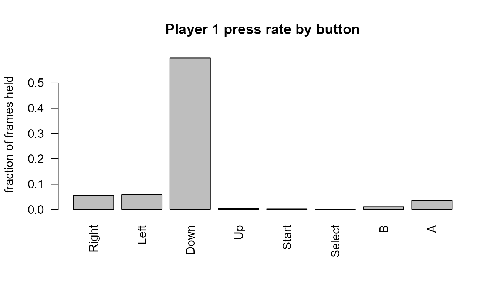
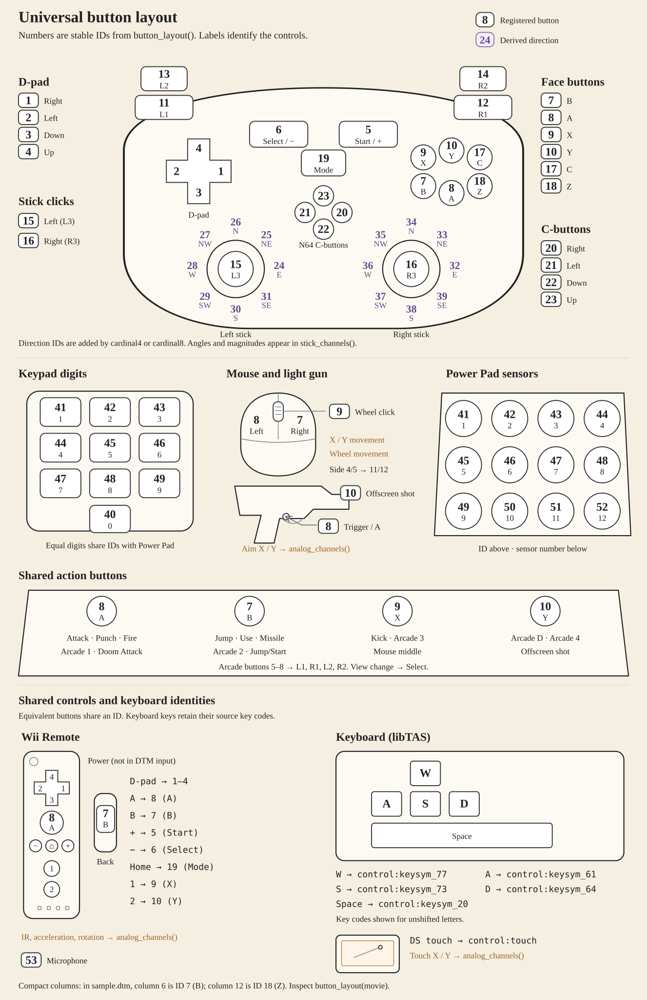

replayr decodes emulator movie (“input log”) files into
a uniform in-memory representation so the same downstream code works
whether the file came off an FCEUX recorder, a BizHawk session, or a
2008-era PSXjin run. This vignette walks through the API on a single
bundled sample.
Reading a movie
Every reader returns a replayr_movie S3 object. Use
read_movie() to dispatch on file extension
automatically:
fp <- system.file("extdata", "sample.fm2", package = "replayr")
mv <- read_movie(fp)
mv
#> <replayr_movie [fm2] frames=1748 players=2 buttons=8 source=sample.fm2>
#> Header keys: version, emuVersion, rerecordCount, palFlag, romFilename, romChecksum, guid, fourscore, ...
#> P1 presses: Right=95, Left=102, Down=1046, Up=7, Start=4, B=17, A=60The bundled sample.fm2 is a publication of Tengen
Tetris for the NES, recorded with FCEUX. The print
method shows that the run is 1748 frames long, has two player slots (NES
standard gamepad layout), uses eight universal-button slots, and lists
every button slot for which player 1 actually held something during the
run.
The replayr_movie object
Underneath the print method, every parsed movie is just a list:
str(mv, max.level = 1L, give.attr = FALSE)
#> List of 6
#> $ header :List of 14
#> $ commands : int [1:1748] 0 0 0 0 0 0 0 0 0 0 ...
#> $ inputs : logi [1:1748, 1:2, 1:8] FALSE FALSE FALSE FALSE FALSE FALSE ...
#> $ source_path : chr "C:/Users/golds/AppData/Local/Temp/Rtmpi2Aq7W/temp_libpatha9346de628c/replayr/extdata/sample.fm2"
#> $ button_mnemonics: chr [1:8] "R" "L" "D" "U" ...
#> $ button_names : chr [1:8] "Right" "Left" "Down" "Up" ...-
header— named list of header keys (e.g.version,emuVersion,romFilename,rerecordCount). Plus a synthetic_formatentry that records which parser produced the movie. -
commands— integer vector of lengthn_frames. Per-frame commands byte (Reset, Power, format-specific bits). Most TAS frames are 0. -
inputs— logical 3D array, dimensions(n_frames, n_players, n_buttons).TRUEmeans the button was held that frame. -
source_path— where the movie was loaded from. -
button_mnemonics/button_names— single-character and human-readable labels for the third dimension.
Three helpers tell you the array’s shape without poking at
dim() directly:
Inspecting one player
player() extracts a single player’s frames as a 2D
logical matrix with named columns:
p1 <- player(mv, 1L)
dim(p1)
#> [1] 1748 8
head(p1)
#> R L D U T S B A
#> [1,] FALSE FALSE FALSE FALSE FALSE FALSE FALSE FALSE
#> [2,] FALSE FALSE FALSE FALSE FALSE FALSE FALSE FALSE
#> [3,] FALSE FALSE FALSE FALSE FALSE FALSE FALSE FALSE
#> [4,] FALSE FALSE FALSE FALSE FALSE FALSE FALSE FALSE
#> [5,] FALSE FALSE FALSE FALSE FALSE FALSE FALSE FALSE
#> [6,] FALSE FALSE FALSE FALSE FALSE FALSE FALSE FALSEpress_counts() is the typical first thing you want —
total frames each button was held:
press_counts(mv, 1L)
#> Right Left Down Up Start Select B A
#> 95 102 1046 7 4 0 17 60Down dominates because the run pre-buffers piece drops. The
Select slot sits at zero for the entire run, which is
normal for a Tetris movie.
A quick visual
A press-rate barplot makes the same data immediately legible:
counts <- press_counts(mv, 1L)
rates <- counts / n_frames(mv)
barplot(rates,
las = 2,
ylab = "fraction of frames held",
main = "Player 1 press rate by button")
The universal button layout
The inputs array’s third dimension is always a prefix of
a single 40-slot universal-button alphabet. Slots 1..8 are NES-shaped
(Right, Left, Down, Up, Start, Select, B, A); higher slots cover the
features other consoles add (SNES X / Y / shoulders, Genesis C / Mode,
N64 C-buttons, an 8-direction stick quantisation, PSX L2 / R2). Slots
31..40 are the Intellivision / ColecoVision numeric keypad (digits
0-9):

INTV’s Enter / Clear and Coleco’s Star / Pound are not given their own slots — they fold into Start (slot 5) and Select (slot 6), since on those platforms they’re pressed once at boot rather than as gameplay verbs.
data.frame(slot = seq_along(universal_buttons()),
mnemonic = universal_buttons(),
label = universal_button_names())
#> slot mnemonic label
#> 1 1 R Right
#> 2 2 L Left
#> 3 3 D Down
#> 4 4 U Up
#> 5 5 T Start
#> 6 6 S Select
#> 7 7 B B
#> 8 8 A A
#> 9 9 x X
#> 10 10 y Y
#> 11 11 p L-shoulder
#> 12 12 q R-shoulder
#> 13 13 C C
#> 14 14 Z Z
#> 15 15 M Mode
#> 16 16 # extra
#> 17 17 > C-Right
#> 18 18 < C-Left
#> 19 19 v C-Down
#> 20 20 ^ C-Up
#> 21 21 e Stick-E
#> 22 22 f Stick-NE
#> 23 23 n Stick-N
#> 24 24 g Stick-NW
#> 25 25 w Stick-W
#> 26 26 h Stick-SW
#> 27 27 s Stick-S
#> 28 28 i Stick-SE
#> 29 29 [ L2
#> 30 30 ] R2
#> 31 31 0 Keypad-0
#> 32 32 1 Keypad-1
#> 33 33 2 Keypad-2
#> 34 34 3 Keypad-3
#> 35 35 4 Keypad-4
#> 36 36 5 Keypad-5
#> 37 37 6 Keypad-6
#> 38 38 7 Keypad-7
#> 39 39 8 Keypad-8
#> 40 40 9 Keypad-9A platform fills only the slots it needs:
| Platform / format(s) | n_buttons |
|---|---|
| NES (.fm2, .fcm, .bk2-NES) | 8 |
| Game Boy / GBC (.vbm, .lsmv-GB) | 8 |
| GBA (.vbm-GBA, .bk2-GBA) | 12 |
| SNES (.smv, .lsmv, .bk2-SNES) | 12 |
| Sega Master System (.bk2-SMS) | 12 |
| Sega Genesis (.gmv) | 15 |
| Sega Saturn (.bk2-SAT) | 15 |
| PC Engine / TG-16 (.bk2-PCE) | 15 |
| Arcade (.bk2-MAME) | 15 |
| N64 (.m64, .bk2-N64) | 28 |
| GameCube (.dtm) | 28 |
| PSX (.pxm, .pjm, .bk2-PSX) | 30 |
| ColecoVision (.bk2-Coleco) | 40 |
| Intellivision (.bk2-INTV) | 40 |
This is what makes cross-platform analysis tractable: the same column index always means “B button”, whether the source movie was .fm2, .smv, or .pjm.
Reading other formats
Every supported extension dispatches through the same entry point:
supported_formats()
#> [1] ".fm2" ".bk2" ".fcm" ".lsmv" ".gmv" ".vbm" ".m64" ".smv" ".pxm"
#> [10] ".pjm" ".dtm"Bundled samples live next to the FM2 one:
bundled <- list.files(system.file("extdata", package = "replayr"),
pattern = "^sample\\.", full.names = TRUE)
basename(bundled)
#> [1] "sample.bk2" "sample.fcm" "sample.fm2" "sample.gmv" "sample.lsmv"
#> [6] "sample.m64" "sample.smv" "sample.vbm"Try one for any format — the API is identical:
mv_bk2 <- read_movie(system.file("extdata", "sample.bk2", package = "replayr"))
mv_bk2
#> <replayr_movie [bk2] frames=1472 players=2 buttons=8 source=sample.bk2>
#> Header keys: emuVersion, MovieVersion, Platform, GameName, Author, rerecordCount, SHA1, BoardName
#> P1 presses: Right=724, Left=727, Down=724, Up=3, A=8
press_counts(mv_bk2, 1L)
#> Right Left Down Up Start Select B A
#> 724 727 724 3 0 0 0 8This Atari 2600 fixture (BizHawk format) ends up indexed against the
same universal layout: slot 8 (“A” in the universal alphabet) is where
the 2600’s single Fire button lands, mirrored from BizHawk’s
Button LogKey column.